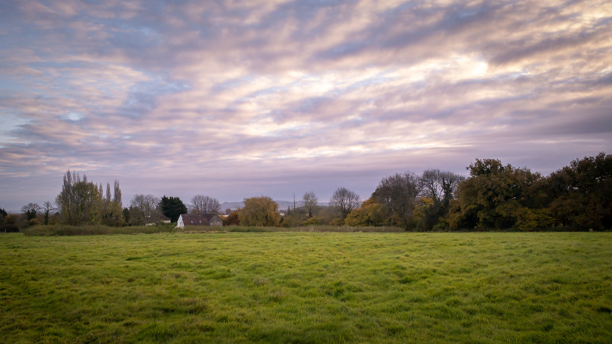
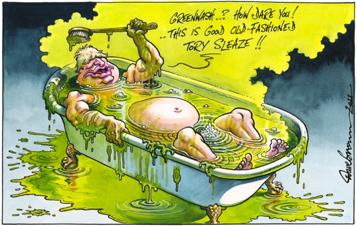

Dramatic sky when out walking the dog this morning.
iPhone 11, Lightroom app, processed in Lightroom Classic
📷
Starmer suggests PM is using Brexit fights to distract from other areas.
“There’s a little bit of me, Andrew, I am afraid that can’t help think that the prime minister is constantly trying to pick a fight on things like this so he hopes people don’t look elsewhere in the forest, which are things like the Owen Paterson affair.”
What happened in the House of Commons yesterday was so foul, the stench might never clear.
What happened on Wednesday afternoon in the House of Commons was absolutely not a politician making the rules then failing to abide by them himself. It was a politician, having been found utterly in breach of them, entirely and unequivocally bang to rights, and responding by having his mates, and the government itself, just rip the rules up altogether.
 From The Independent

“Not our fault!” Spitting Image nailed it.


This is a disgrace.
Tory MPs have been defending themselves from accusations they have given the go-ahead to water companies to dump raw sewage in rivers.
A proposal from the Lords to the Environment Bill that would have placed legal duties on the companies to reduce discharges was defeated by 265 MPs’ votes to 202 last week.
Source: Tory MPs defend votes after uproar over sewage proposals - BBC News
Listening to Live to Tape: Volume 1 by Bahamas that includes tracks with The Secret Sisters and The 400 Unit 🎶

Micro.blog October 2021 Photoblogging Challenge #24 connection 📷
Had to replace a hot water/heating diverter valve this week.

Micro.blog October 2021 Photoblogging Challenge #23 meaning 📷
The meaning of sunflowers in dreams is “victory under pressure or trying times,” which seems perfect for life in the UK.

Micro.blog October 2021 Photoblogging Challenge #22 rest 📷

Taking a rest during a walk around Nice, France.
Micro.blog October 2021 Photoblogging Challenge #21 space 📷

I took this in 1985 when I was working for Intergraph in Huntsville, AL
CBI chief policy director Matthew Fell on UK’s Net Zero plan.
“To truly transform the UK economy based on sustainable and green growth, we need to push further and faster and make key decisions on how to finance the transition to net zero. An honest conversation needs to happen here in the UK about how we pay to go green”.

What’s on My MacBook?
When I bought my M1 MacBook Air earlier this year I said that I wouldn’t install loads of apps, but try to keep to a minimal set. Six months on, and I think I’ve failed!
Here’s a screenshot of the app menu.

Menu bar

- 1Password
- Alfred
- BetterSnapTool
- Dropbox
- ToothFairy
- Typinator
- Dropbox
Utilities
- AppCleaner
- Carbon Copy Cloner
- Celo VPN
- Cyberduck
- Evernote
- Grammarly
- MacUpdater
- Name Mangler
- Ulysses
Browsers
- Microsoft Edge
- Firefox
- Safari
Personal Apps
- Lightroom Classic
- Pixelmator
- ON1 Photo Raw 2022
- Luminar AI (Too many photo editing apps!)
- Apple Music
- Exodus
- Pine Player
- Pocket Casts
- Todoist
- Sonos
- Spark / Fastmail email
- MacFamilyTree 9
- Micro.blog
- Moneywiz
- Tweetdeck
- XLD
Business Apps
- Office 365
- Omnigraffle
- Microsoft Teams
- MindNode
- ownCloud
Installed but never/rarely used
- iMovie
- News
- Notes
- Parallels Desktop
- Podcasts
- Reminders
- Scrivener
- Spotify
- Stickies
- Stocks
- Telegram
- TextEdit
- Vidyard
- TV
- Zoom


Micro.blog October 2021 Photoblogging Challenge #16 rotation 📷

It’s the centre spindle of the London Eye.

Labour shadow business and energy secretary Ed Miliband on Kwarteng.
“This is a new low for government energy policy. Reduced to crossing his fingers for a mild winter, Kwasi Kwarteng is showing just how much a decade of inaction from the government has left us vulnerable. Kwasi Kwarteng is the business secretary, not a weatherman. It is cold comfort for businesses and families that this is all he has to offer.”


Matthew Lesh of the Adam Smith Institute gives a glowing(?) review of PM’s speech at the Tory conference.
“Boris’s rhetoric was bombastic but vacuous and economically illiterate. This was an agenda for levelling down to a centrally-planned, high-tax, low-productivity economy. He is hamstringing the labour market, raising taxes on a fragile recovery and shying away from meaningful planning reform. Shortages and rising prices simply cannot be blustered away with rhetoric about migrants. There is no evidence that immigration lowers living standards for native workers. This dog whistle shows this government doesn’t care about pursuing evidence-based policies.”


Interesting article by Tom McTague on The Atlantic website today.
According to his onetime rival for the Conservative leadership, Rory Stewart, Johnson is “the most accomplished liar in public life—perhaps the best liar ever to serve as prime minister.”


Micro.blog October 2021 Photoblogging Challenge #3 majority 📷

This is what you get when the majority put their cross in the wrong box.
London petrol station charging nearly double the average price for fuel sells out - The Independent
Disgusted that this petrol station is charging twice the usual price
Boris Johnson condemned for saying ‘never mind’ about cancer outcomes
Boris Johnson has sparked outrage on the eve of the Conservative Party conference after saying “never mind” about cancer death rates and the recent fall in life expectancy.
Grilled about his plans for Britain’s recovery from the Covid crisis, the prime minister chose to emphasis economic growth over health measures.
Pointing to the recent growth in wages, Mr Johnson told the BBC: “I’ve given you the most important metric – never mind life expectancy, never mind cancer outcomes – look at wage growth.”
Opposition parties pounced the prime minister’s remarks, with Labour accusing him of showing an “outrageous” disregard for the health of British citizens. Shadow health secretary Jonathan Ashworth told The Independent: “Boris Johnson starts his conference with the most chilling words ever spoken from a prime minister dismissing the importance of cancer outcomes.”

Listening to Vessel by The Accidentals on Apple Music 🎶
Try to give it time, life will teach you how to live
You just have to live it for a while

One of the best lines in Kier Starmer’s speech at the Labour Party Conference yesterday.
“It’s easy to comfort yourself that your opponents are bad people. But I don’t think Boris Johnson is a bad man. I think he is a trivial man. I think he’s a showman with nothing left to show. I think he’s a trickster who has performed his one trick.”
Trying out Apple Music, listening to star-crossed from Kasey Musgraves. Somehow I managed to get a free 6-month trial, so I’ll probably cancel my Tidal subscription 🎶
This article from The New Statesman website is a sobering read for those of us lucky enough not to worry too much about the odd £20,
Whitehall’s own analysis finds the cut will have a “catastrophic” impact, warning “homelessness and poverty are likely to rise, and food banks usage will soar”. More than half a million people face being pulled below the poverty line, including 200,000 children, as a result of this change, according to the Joseph Rowntree Foundation, an anti-poverty organisation.
Finished reading: The Things You Find In Rockpools by Gregg Dunnett. Grab a free copy here 📚

Who’s a clever boy? 🐕


Many thank to Nicky, Doug and the rest of the DJ Dog Training Club team for your help getting us through.


Listening to From Dreams to Dust by The Felice Brothers on Tidal. I first discovered this band when I was looking for music to play on my Monday Music Mix show on ITfM Radio back in the day. 🎶
What's Boris Johnson's reshuffle really all about?
“This is a mad way to run the country,” confessed a member of the government.
Whether prime ministers wield sharp knives or attack with blunt spoons, reshuffle days like this are indeed a strange mixture of bravado and farce.
Bravado when, earlier, one cabinet minister told me, “I think I’m OK,” as, ashen-faced, looking nauseous and clammy, they were en route to see the prime minister before promptly being sacked.
And farce when, as legend has it, on several occasions, would-be ministers end up jobless, because the post-it notes with their name on fell off the board. Forgotten, their career plunged to the floor too.
Read more on BBC News: What’s Boris Johnson’s reshuffle really all about?
I have three invites to Literal.club if anyone is interested https://literal.club/invite/D7H0BFU 📚
Two Fingers by Sea Power
This is the first track released from the new album, Everything was Forever, due February 2022. 🎶
I’m enjoying using the Argentum Camera app on my iPhone. Here are a couple of images from today’s early morning walk with “the boy” over the fields. 📷


Lest We Forget
For heathen heart that puts her trust
In reeking tube and iron shard,
All valiant dust that builds on dust,
And guarding, calls not Thee to guard,
For frantic boast and foolish word—
Thy mercy on Thy People, Lord!
Source: A Choice of Kipling’s Verse (1943)

Sony a6300, Sony E 16-70 F4 ZA OSS, processed in Luminar AI
📷
Listening to A Beautiful Life by Heartless Bastards on Tidal. This band had passed me by, but pleased that they’re now on my radar. This album will be high on my “Best of 2021” list in December. 🎶

Testing out Street mode in Argentum app
I got a haircut this morning, and this is a candid shot of Isaac prepping the chair I took on my iPhone 11 using the Argentum app. The image is as shot with no post-processing.
Thanks to @TheDimPause on Micro.blog for pointing me in the direction of the Argentum app, which captures Black & White images. 📷

Did they fix UK social care or just kick the can down the road?
I’m not convinced that the UK social care crisis will be fixed by the rise in NIC contributions. It sounds to me that the additional tax payable from next April, will be used to drive down the NHS backlog, which was already growing pre-pandemic. The new care reforms are slated to come into effect in late 2023 but the details are sketchy. No mention of reform of the care providers, staff wages and conditions.
Boris Johnson said at PMQs today words to the effect that there will be innovative private firms that will insure you against selling your house to pay for care.
This article is by Stephen Bush, political editor of the New Statesman and is worth a read. Please note that the copyright belongs to The new Statesman.
The government will increase National Insurance from 12 per cent to 13.25 per cent next year to… do what, exactly? The headline that Boris Johnson wants (and, with a few exceptions in today’s papers, the headline he has got) is that the money is to fix the social care crisis and to reform social care.
But if you look at the rest of what he, Rishi Sunak and Sajid Javid are saying, then the one thing that the government has not done is provide the money to fix the crisis and to reform social care.
Instead, it has hiked taxes in order to spend more money on reducing waiting times in the National Health Service, laid out a broad set of principles about what the balance between the state and private individuals should be in paying for social care, and invented a new way to increase income tax through the so-called health and social care levy, which will come into being as a separate line on payslips from the 2023 tax year. (“So-called” because the costs of health and social care are far in excess of what the levy raises: just like National Insurance, it’s another tool for the Treasury to increase income tax without saying it is increasing income tax.)
Politically speaking, Johnson is surely right to believe that mounting NHS waiting times (which were constantly getting longer before the pandemic and are significantly worse now) are a bigger problem for the government today than the social care crisis. But that’s the biggest reason to be dubious about claims that the money for fixing social care is going to come from yesterday’s tax hike: at no point in British political history has money from the NHS been taken back out of it and redirected to elsewhere in the British state, and it seems unlikely, to put it mildly, that we are going to start in three years’ time. So the money for social care will have to come from somewhere else, whether it’s more borrowing, taxes elsewhere, or, the most likely alternative in my view, a big I-can’t-believe-it’s-not-income-tax increase to the health and social care levy.
There are a couple of risks to that approach: the first is that this plan depends on the social care system limping on in its present state, unnoticed by most people, for the next three years. It’s possible that the pressures on social care, the ongoing cuts to local authority budgets, and the ever-growing number of people of all ages in need of social care won’t cause a major crisis before 2023. But it’s equally possible that the problem becomes more acute the wrong side of the next election.
The second risk is that the broken manifesto promise and the reality that, for all the talk of ending austerity, the rest of the parliament is going to be one in which spending restraint continues, gives the government a reputation for shiftiness: for breaking its promises and failing to deliver. The comparison that Johnson’s inner circle and the Treasury have kept making is to Gordon Brown’s increase in National Insurance following the 2001 election. The equally important part of Brown’s tax increase is that he didn’t need to do the same thing in 2003, and that by 2005, the NHS was, visibly, in a better state of repair than it had been in 2001.
The big bet that Johnson is making is that, when the next election rolls around, the United Kingdom will feel and look like a country where the crisis in health and social care is being addressed, even if it isn’t really, and even if the difficult decisions are still being put off and the actual task of fixing social care has been kicked into the next parliament.
UK Government says polluters can dump sewage into rivers as Brexit disrupts water treatment
It beggars belief that the UK government is telling businesses they can dump raw sewage into our rivers because of Brexit-related issues with the supply chain. Boris Johnson’s “Sunlit Uplands” will start to stink if this carries on much longer.
This is the quote from today’s “Inside Politics” email from The Independent:
Is Brexit just a load of crap? Amid the well-documented supply chain and lorry driver shortage crises, ministers have given businesses the green light to dump the brown stuff in Britain’s rivers. Some companies have found it more difficult to get hold of water treatment chemicals because of supply chain disruption at ports blamed primarily on the UK’s departure from the EU.
The Environment Agency this week said companies struggling to get hold of such products would be allowed to “discharge effluent without meeting the conditions” of their permits, which normally require water to be treated.
The Green Party is furious. Amelia Womack, deputy leader, said: “This is a failure of their understanding on how our country’s most basic infrastructure works and using our environment as a dumping ground rather than addressing the root causes of the problem. “To prevent further Brexit chaos and undermining of environmental protections, the government must work to mend supply chains and work to cooperate rather than trying to look ‘tough’.”
The government says the measures are “strictly time-limited and there are robust conditions in place to mitigate risks to the environment”. Maybe best to avoid wild swimming for a while.
Fundraising for Wiltshire Ride + Stride
I’m fundraising for Wiltshire Ride + Stride this coming Saturday. Ride + Stride raises money for Wiltshire’s Churches. Half the money donated goes to the participant’s chosen church, and the other half is used by the Wiltshire Historic Churches Trust in grants to churches for repairs and preservation. Check out my @JustGiving page and please donate if you can. Thank you! 🚴
Pictures from the car show
Twin-cylinder Morgan

Sony a6300, Sony E 16-70 F4 ZA OSS, processed in Lightroom Classic
Car bonnet (hood) mascot

Sony a6300, Sony E 16-70 F4 ZA OSS, processed in Lightroom Classic
📷🚙
Finished reading
Finished reading: How to Lose a Country: The 7 Steps from Democracy to Dictatorship by Ece Temelkuran 📚
How to Lose a Country is an impassioned plea, a warning to the world that populism and nationalism don’t march fully-formed into government; they creep. There’s a lot about post-Brexit England that I recognised in the book that should concern us all.
As one of the panellists, I smiled bitterly as I thought about how all these brilliant journalists were yet to suffer the despair of realising that their tactics were akin to playing chess against a pigeon, as someone once described debating evolution with a creationist: the pigeon will just knock over all the pieces and shit on the board, then depart, proudly claiming victory and leaving the mess behind for you to clean up.
I’ve got three invites to Glass if anyone wants one 📷
Album of the Week — August 13, 2021
My Album of the Week is Pressure Machine from The Killers. Really enjoying the slightly more restrained tracks like “Runaway Horses" as well as belters such as “In The Car Outside.”
The commentary before some of the tracks adds to the overall feel of the album.
Listen on Tidal:
🎶
Excited to read about the new Evernote features on their blog today
Currently reading: The Things You Find In Rockpools by Gregg Dunnett 📚

Former Manchester United defender Gary Neville had a message for politicians of all stripes: “The standards of leaders in this country in the last couple years has been poor. And looking at that man there that’s everything a leader should be: respectful, humble, telling the truth”.
Here’s “Wally” the walrus that is famous around the Isles of Scilly at the moment. I spotted him chilling out on the back of the Scilly water ambulance today.

Sony a6300, Sony E 16-70 F4 ZA OSS
📷

Cycle tour of St. Mary’s, Isles of Scilly.
Cycle tour of St. Mary’s, Isles of Scilly. It’s the best way to see the island and suits the slower pace of life here.

iPhone 11, Lightroom app, processed in Lightroom Classic

iPhone 11, Lightroom app, processed in Lightroom Classic
🚲📷
View of Hugh Town harbour on St. Mary’s, Isles of Scilly taken from our hotel room this morning.

iPhone 11, Lightroom app, processed in Lightroom Classic
📷
First flight for over 2 years, from Exeter to St. Mary’s, Isles of Scilly, on the smallest plane I’ve ever been on.

iPhone 11, Lightroom app, processed in Lightroom Classic
📷✈️
Finished reading: The Shadows of London (Joseph Bridgeman series, Book 2) by Nick Jones. I was lucky enough to have a pre-release copy📚
Listening to the new album from Hiss Golden Messenger this morning whilst doing the weekly reports...
Listen on Spotify.
🎶
I really liked the detail on this gnarly old tree we saw on our walk yesterday.

iPhone 11, Lightroom app, processed in Lightroom Classic
📷
Finished reading: Hitman Anders and the Meaning of It All by Jonas Jonasson 📚
Gentle ride to Malmesbury for coffee and cake with Janet.

iPhone 11, Lightroom app, processed in Lightroom Classic
📷🚲
View of St. Giles Church, Tytherton Kellaways, Wiltshire from across the meadow.

iPhone 11, Lightroom app, processed in Lightroom Classic
📷


My Album of the Week is Seeking New Gods, another solo release from Super Furry Animals' frontman Gruff Rhys..
Listen on Tidal:
🎶


 I have recently started to use
I have recently started to use